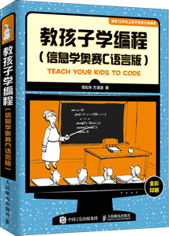

首页 > 书籍下载
《教孩子学编程(信息学奥赛C语言版)》PDF下载（高清完整版）
|  | 作者：党松年、方泽波 |
| 出版时间：2019年10月01日 | |
| 出版社：人民邮电出版社 | |
| 书号ISBN：9787115513175 | |
| 总页数：320 | |
| 总字数：41.5W |
这是一本精心为 12 岁及以上的孩子编写的 C 语言入门书籍，内容全面，语言通俗易懂，实例丰富，非常适合作为家长和老师教孩子学习 C 语言的指导用书。
这里提供的是《教孩子学编程(信息学奥赛C语言版)》的高清 PDF 下载，内容完整，附带目录标签。
和其它同类的 C 语言书籍相比，这本书非常注重语言的通俗性，书中尽可能地避免使用专业术语，更多的是用大白话讲解 C 语言的知识点。为了降低孩子的学习难度，书中穿插了大量的精美图片，代码部分也都给出了详尽的注释，代码功能一目了然。
这本书的定位是 C 语言入门书籍，适合 12 岁及以上的孩子，可以作为备考青少年信息学奥赛的参考资料，对编程感兴趣的成年人也可以阅读这本书。
一位教孩子学编程的家长购买了这本书，给出的评价是：
这本书通俗易懂，最适合初学者，我特地买给孩子学习程序设计语言。
书籍目录
- 第1章 揭开计算机的神秘面纱 001
- 1.1 计算机的发展历程 002
- 1.2 计算机的组成原理 003
- 1.3 一台完整的计算机是由硬件和软件构成的 008
- 1.4 对计算机来说所有的东西都是数字 010
- 1.5 二进制 013
- 1.6 八进制和十六进制 015
- 1.7 数制转换 016
- 1.8 计算机内部数据的基本单位——字节 023
- 练习题 025
- 第2章 程序的“奥妙”：进入C语言的世界 029
- 2.1 机器语言 030
- 2.2 高级语言 032
- 2.3 完整的C语言程序长啥样 034
- 2.4 main() 函数 036
- 2.5 C语言程序中的语句 037
- 2.6 流程：程序中语句的执行次序 039
- 2.7 算法：程序解决问题的处理步骤 040
- 2.8 算法描述 043
- 练习题 048
- 第3章 变量和数组：C语言中数据的表示方法 050
- 3.1 C语言中的数据及数据类型 051
- 3.2 变量：保存数据（值）的空间 053
- 3.3 变量的类型 055
- 3.4 变量的命名规则 057
- 3.5 赋值语句：向变量代入数据（值） 059
- 3.6 交换两个变量的值 061
- 3.7 数组 065
- 3.8 数组声明和引用 067
- 3.9 二维数组 069
- 3.10 二维数组的引用 071
- 3.11 数组的初始化 073
- 3.12 字符串：字符数据组成的数组 075
- 练习题 079
- 第4章 输出输入：C程序与用户的交互方式 080
- 4.1 数据输出：printf()函数和puts()函数的使用 081
- 4.2 printf()中的转化字符用法详解 089
- 4.3 数据输入：scanf()函数的使用 093
- 4.4 字符的输出输入 099
- 4.5 预处理指令：#include 和#define 101
- 4.6 内置函数：system() 104
- 4.7 C语言怎么做数学运算 107
- 4.8 数据类型转换 109
- 4.9 自增与自减运算符 111
- 4.10 C语言中的标准数学库函数 112
- 4.11 复合赋值运算符 113
- 练习题 114
- 第5章 顺序结构：语句按顺序依次执行 119
- 5.1 顺序结构的算法描述 120
- 5.2 编程实例1：桐桐分糖果 122
- 5.3 编程实例2：数字分离（splitnum） 124
- 5.4 编程实例3：农夫与石头 128
- 5.5 编程实例4：计算旅行花费 130
- 5.6 编程实例5：时间戳（times） 132
- 练习题 136
- 第6章 选择结构：根据条件判断改变执行流程 139
- 6.1 关系运算 140
- 6.2 逻辑运算 142
- 6.3 if-else条件语句 145
- 6.4 编程实例1：整除和排序 146
- 6.5 条件运算符“ : ” 150
- 6.6 多层条件语句：if-else语句的嵌套 152
- 6.7 编程实例2：构造三角形和优惠促销 154
- 6.8 switch开关语句 158
- 6.9 编程实例3：成绩登记和计算某月天数 160
- 练习题 164
- 第7章 循环结构：让某个操作重复执行多次 167
- 7.1 循环结构的算法描述 168
- 7.2 while当型循环语句 170
- 7.3 编程实例1：统计字符数和求公约数 172
- 7.4 do-while 直到型循环语句 176
- 7.5 编程实例2：十进制数转换为二进制数 177
- 7.6 编程实例3：分解质因子 180
- 7.7 do-while 语句与while 语句的互换 182
- 7.8 编程实例4：判断质数和数列求和（1） 183
- 7.9 for 循环语句 188
- 7.10 编程实例5：数列求和（2） 189
- 7.11 编程实例6：棋盘上的麦粒 191
- 7.12 编程实例7：求值和小值 194
- 7.13 for 循环语句的嵌套 196
- 7.14 编程实例8：嵌套循环应用 197
- 7.15 用for 循环语句给数组元素赋值 201
- 7.16 编程实例9：遍历数组 202
- 7.17 冒泡排序：使用嵌套的for循环 205
- 7.18 编程实例10：排序 206
- 7.19 终止循环：break和continue语句 208
- 7.20 编程实例11：顺序查找 210
- 7.21 编程实例12：二分法查找 211
- 练习题 213
- 第8章 函数：可重复使用的功能性“零件” 218
- 8.1 函数是C 程序中主要的“组合零件” 219
- 8.2 函数的定义 220
- 8.3 函数的调用 222
- 8.4 函数调用时参数的传递：值传递 225
- 8.5 函数调用时数组的传递 226
- 8.6 编程实例1：计算组合数和计数 229
- 8.7 变量的作用域：文件作用域和块作用域 231
- 8.8 C程序执行过程中变量的存储期 233
- 8.9 编程实例2：矩阵转置 236
- 8.10 编程实例3：数制转换 238
- 练习题 242
- 第9章 结构体：多种类型数据的集合体 246
- 9.1 结构体：多种类型数据的集合体 247
- 9.2 结构体的声明 248
- 9.3 结构体对象的定义及初始化 249
- 9.4 结构体对象成员的访问 252
- 9.5 相同类型的结构体对象可以互相赋值 253
- 9.6 编程实例1：比较两个日期的迟早 254
- 9.7 编程实例2：计算奖学金总额 256
- 9.8 编程实例3：按考试成绩排名次 258
- 练习题 260
- 第10章 指针：用内存地址指定对象 262
- 10.1 内存地址和指针的定义 263
- 10.2 指针和函数 268
- 10.3 指针和scanf() 函数 270
- 10.4 指针和数组 271
- 10.5 指针和结构体 274
- 10.6 链表结构 275
- 10.7 编程实例1：构造单向链表 278
- 10.8 单向链表的基本操作 280
- 10.9 编程实例2：链表结点的查找、插入和删除 282
- 10.10 其他链表结构 285
- 10.11 编程实例3：构造双向链表 286
- 10.12 编程实例4：约瑟夫问题（Joseph） 287
- 练习题 289
- 第11章 文件处理：长期保存程序运行结果 295
- 11.1 流式文件 296
- 11.2 文件的打开与关闭 297
- 11.3 用函数对文件进行读写操作 299
- 11.4 编程实例1：按字符复制文件 302
- 11.5 编程实例2：存取格式数据 303
- 11.6 编程实例3：文件合并 304
- 11.7 编程实例4：按考试成绩排名次 308
- 练习题 310
书籍下载
一键登录，免费下载完整版 PDF，文件名称：《教孩子学编程(信息学奥赛C语言版)》.pdf